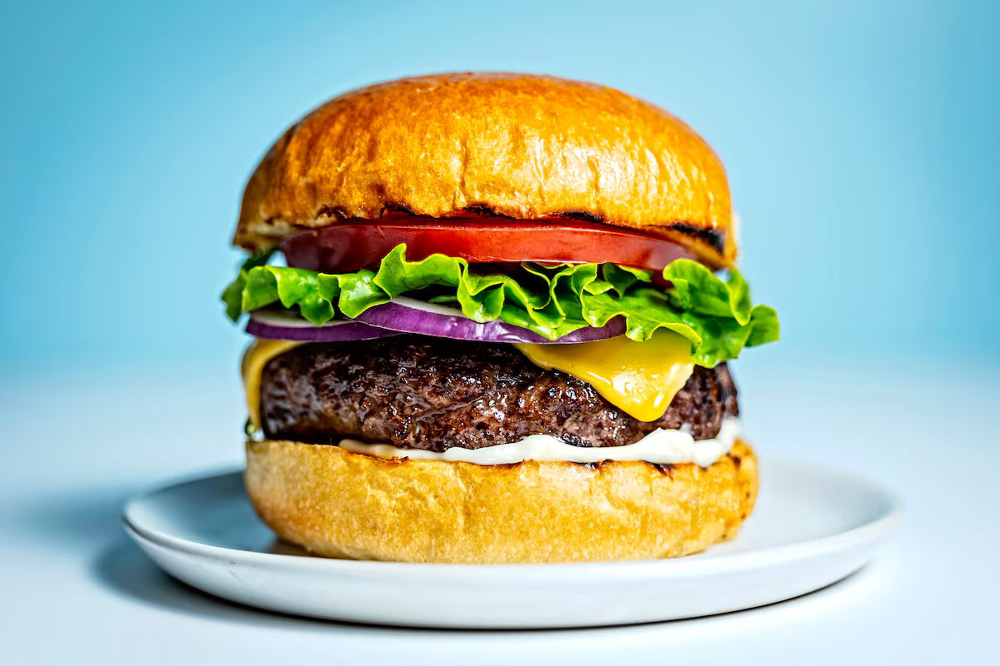

Hamburger

Description
Ingredients
- 800g - 1kg / 1.6 - 2 lb ground beef (mince), 20%+ fat (Note 1)
- Salt and pepper
- 3 onions, peeled and sliced into rings
- 2 tbsp oil
- 4 - 8 slices cheese of choice, I use Swiss (optional)
- 4 soft hamburger buns, lightly toasted
- Lettuce, tomato slices
- Ketchup, mustard, relish, sliced pickles
Steps
-
Separate beef into 4 equal portions. Use hands to lightly form into
patties the size of your buns (mine are about 10 cm / 4") - don't press
hard, light fingers = soft juicy patties (see video for how I do this).
-
Season generously with salt and pepper on both sides. Make a dent on one
side (stop burger from become dome shape and shrinking when cooking).
-
Heat 1 tbsp oil in a heavy based skillet or BBQ over high heat. Add
onion and cook until wilted and caramelised. Season with salt and
pepper, then remove.
-
Heat 1 tbsp oil until smoking. Add patties and cook for 2 minutes until
deep golden with a great crust. Do not press! Flip carefully, cook for 1
minute then top with cheese (if using). Cover with lid and cook for
further 1 minute until cheese is melted.
- Meanwhile, toast the cut side of the buns lightly.
-
To serve: Spread base of buns with sauce / condiment of choice. Top with
lettuce then tomato, then hamburger patty. Pile over onions, sliced
pickles, then more sauce/condiments. Top with lid of bun. Serve
immediately.
Home